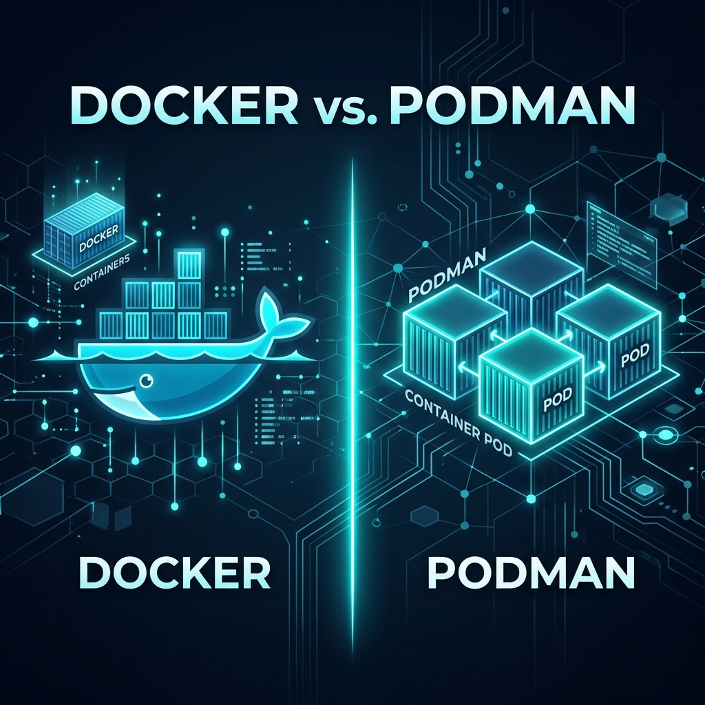

{kind=link}
Obsidian Hotkeys Cheatsheet Poster
A high-resolution, vector-designed dark wallpaper and printable reference sheet of all essential shortcuts for quick note creation, split panes, and search.
Grab our tested configuration packs, starter vaults, Docker compose bundles, and command cheatsheets. No paywalls, no email lock-in—just clean resources to build your setup faster.
The exact vault setup featured across our YouTube tutorial series. Pre-configured with our strict 4-folder organization structure, daily logging templates, Dataview indexing blocks, and custom dark mode CSS snippets for zero-lag productivity.

A curated, production-ready bundle of clean docker-compose.yml templates for all services featured on our channel. Includes persistent folder volume structures, environment variables, and correct permission commands.

A high-resolution, vector-designed dark wallpaper and printable reference sheet of all essential shortcuts for quick note creation, split panes, and search.
Essential CLI commands for Proxmox VE: LXC container management (pct), VM controls (qm), Ceph health diagnostics, quorum monitoring, and storage status.
Tested community blocklists that block telemetry, smart TV trackers, and malware without breaking home banking, streaming video platforms, or Apple/Google services.
Ready-to-copy Dataview queries for rolling up weekly open tasks, indexing the 10 most recently modified notes, and building milestone progress tables in Markdown.
Step-by-step verification checklist for provisioning secure tunnels, configuring local HTTP origins, and locking down private web services behind Google/Email OTP gates.
Deploy a gorgeous, open-source web-first Markdown knowledge base with built-in interactive graph views and Mermaid flowchart diagramming in under 5 minutes.